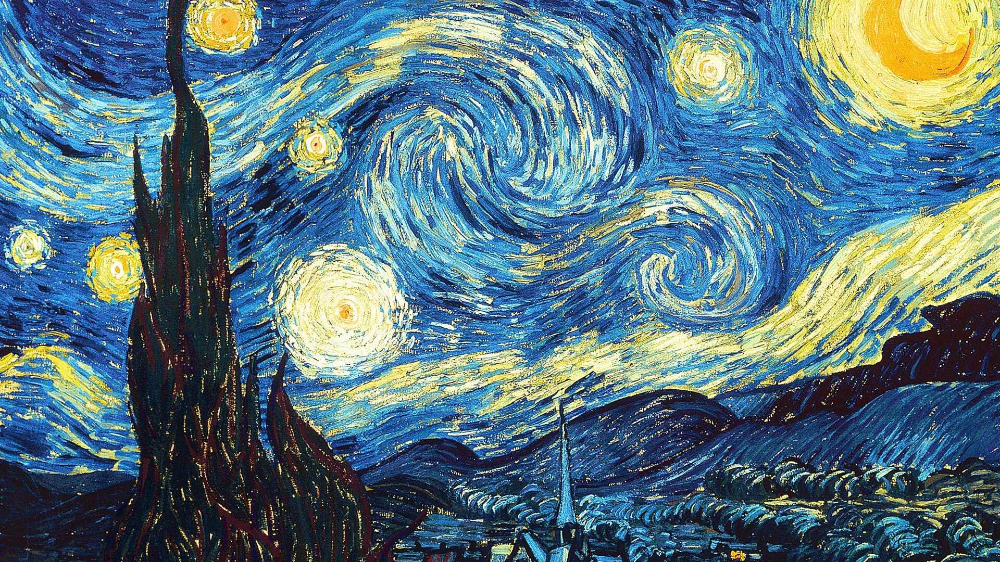
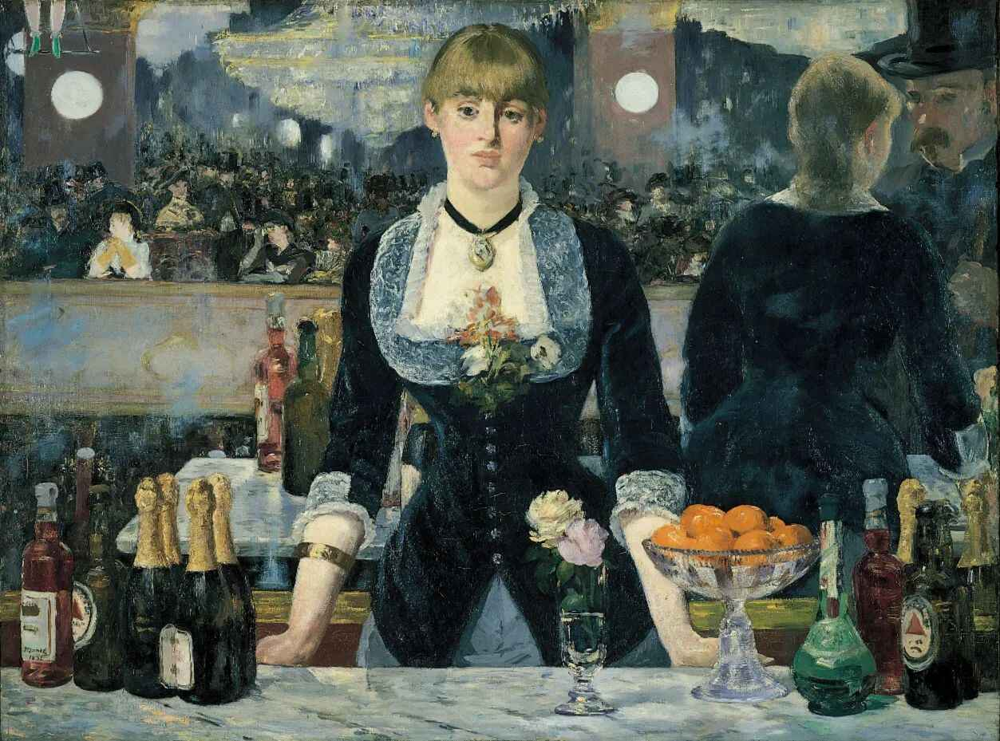

Why Modernism Mattered: Breaking the Rules, Redefining Art
Modernism wasn't just a literary movement, it was a cultural revolution. After the horrors of World War I, people began to question everything: religion, politics, the purpose of life, and even the way stories were told. Modernist writers rejected the old, polished, predictable style of the 19th century. Instead, they created new forms of expression that reflected the confusion, chaos, and uncertainty of the 20th-century world.

🔍 Three Defining Characteristics of Modernism
1. Fragmentation
“Things fall apart; the centre cannot hold.” – W.B. Yeats
Shifts in time and perspective
Multiple narrators
Unfinished thoughts
This mimicked how people really think and remember not in neat, logical order, but in fragments. It also reflected the fractured post-war world.
2. Alienation and Isolation
Characters in modernist stories often feel lost, disconnected, or misunderstood. Why?
The modern world became fast-paced and impersonal.
Traditional beliefs no longer made sense.
Writers like T.S. Eliot, Franz Kafka, and Virginia Woolf captured this loneliness with deep, introspective writing.
This theme still speaks to us today, especially in a world full of social media, overthinking, and identity struggles.
3. Experimentation with Form and Language
Modernists didn’t just write differently they ,rewrote the rules. They:
Removed plot structure and used stream of consciousness
Broke grammar rules
Played with symbolism, myth, and allusion
This created writing that was strange, exciting, and sometimes hard to understand but always thought-provoking.

📚 Why It Was So Important
Modernism was more than just a literary movement, it transformed the way people read, wrote, and understood art. Writers began to break away from traditional forms, choosing instead to be honest about pain, doubt, and fear. Themes of mental health, identity, and the fractured nature of reality emerged, reflecting a world in transition. Modernist works often served as a mirror to reality, even if that mirror was cracked, distorted, or uncomfortable to face.
This era was deeply rooted in the changes of its time. It captured the destruction and disillusionment brought by war, the shifting gender roles propelled by the rise of feminism, the groundbreaking insights of psychology through thinkers like Freud, and cultural revolutions that swept across Europe, America, and beyond. Modernist art became a response to the rapid, and often unsettling, transformations of the early 20th century.
Even today, Modernism’s influence is undeniable. It paved the way for Postmodernism, experimental film, theater, and music, and it shaped many of the popular literary themes we see now, from existential crises and anti-heroes to unreliable narrators. In challenging old conventions, Modernism didn’t just change literature; it changed the way we think about storytelling itself.